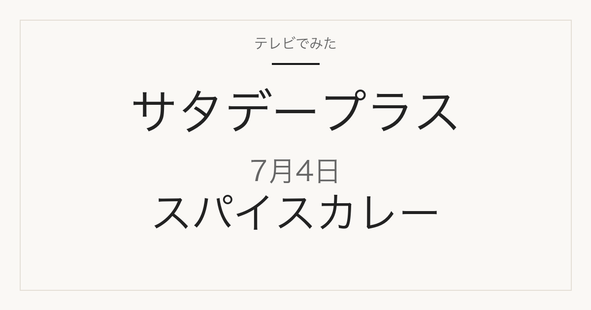

1位／番組掲載価格 350円
無印良品
素材を生かしたカレー グリーン
無印良品の自社商品です。無印良品の店舗・通販で扱われます。
テレビ紹介商品の記録メディア
2026年7月4日（土）放送
「ひたすら試してランキング」で調査された5品

2026年7月4日放送のサタデープラス「ひたすら試してランキング」はレトルトスパイスカレー。清水アナウンサーが10時間以上かけて5商品を比較し、ベスト5を選んでいます。番組掲載価格は350円から590円まで幅があります。
この記事には広告・アフィリエイトリンクが含まれます。順位・商品名・番組掲載価格は番組公式情報で確認しています。価格は2026年7月4日時点の番組調べで、現在の販売価格・在庫・取り扱いは変わります。1個あたりの価格は番組掲載価格と商品名の内容量から算出したものです。
味や使い勝手だけでなくコストパフォーマンスが項目に入っているため、上位が最安とは限りません。価格は下の一覧で確認してください。
| 順位 | ブランド | 商品名 | 番組掲載価格 |
|---|---|---|---|
| 1位 | 無印良品 | 素材を生かしたカレー グリーン | 350円 |
| 2位 | 新宿中村屋 | インドを旅するインドカリー カルダモン香るカシミールビーフ | 466円 |
| 3位 | カルディコーヒーファーム | オリジナル ビーフローガンジョシュ カシミールカレー | 494円 |
| 4位 | ヤマモリ | タイカレー マッサマン | 453円 |
| 5位 | ニシキヤキッチン | 夏カレー（レモンスパイシーチキンカレー） | 590円 |
1位／番組掲載価格 350円
無印良品
無印良品の自社商品です。無印良品の店舗・通販で扱われます。
2位／番組掲載価格 466円
新宿中村屋
メーカー商品です。スーパーや通販で扱われます。

180g・1箱。番組掲載と同じ単品です。
3位／番組掲載価格 494円
カルディコーヒーファーム
カルディコーヒーファームの自社商品です。カルディコーヒーファームの店舗・通販で扱われます。
4位／番組掲載価格 453円
ヤマモリ
メーカー商品です。スーパーや通販で扱われます。

1個。番組掲載と同じ単品です。
5位／番組掲載価格 590円
ニシキヤキッチン
メーカー商品です。スーパーや通販で扱われます。

180g・1個。数量・期間限定商品です。
このランキングで最も安いのは無印良品「素材を生かしたカレー グリーン」の350円、最も高いのはニシキヤキッチン「夏カレー（レモンスパイシーチキンカレー）」の590円です。
通販では番組と販売単位が違うことがあります。商品名だけでなく内容量と入り数を合わせて確認してください。
2026年7月4日放送の1位は、無印良品「素材を生かしたカレー グリーン」です。番組掲載価格は350円でした。
①香り ②ソースの味 ③具材の味 ④コストパフォーマンス ⑤ごはんとの相性を清水アナウンサーが調査したランキングです。
スーパーや通販で扱われるメーカー商品が中心です。放送から時間が経っているため、販売が終了している場合があります。
MBS「サタプラ」ひたすら試してランキング レトルトスパイスカレー
順位・商品名・番組掲載価格は2026年7月4日現在の番組公式情報によります。